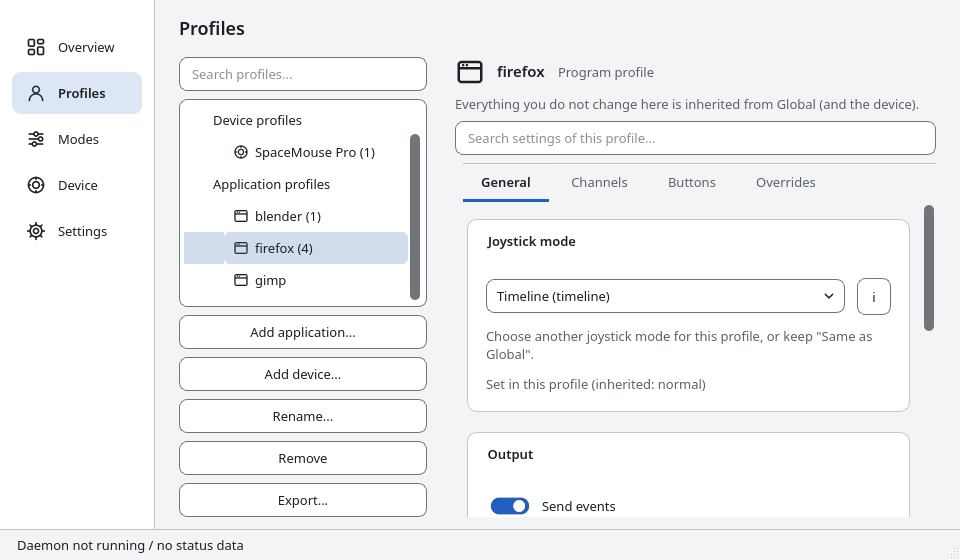
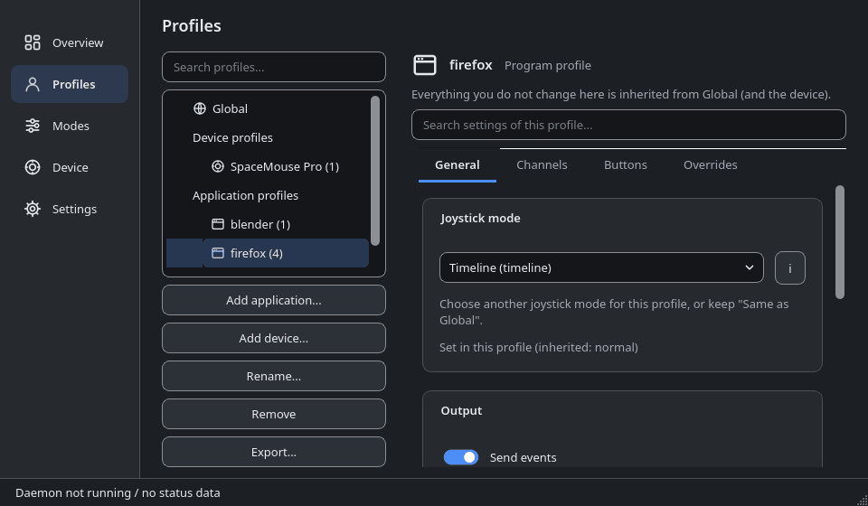
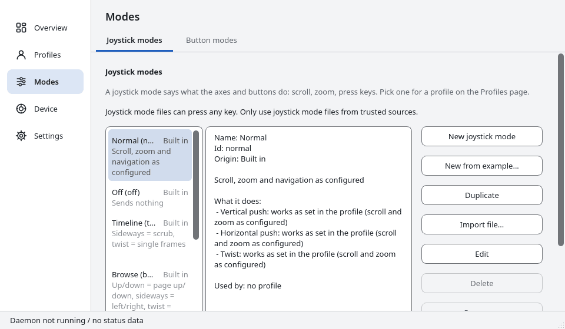
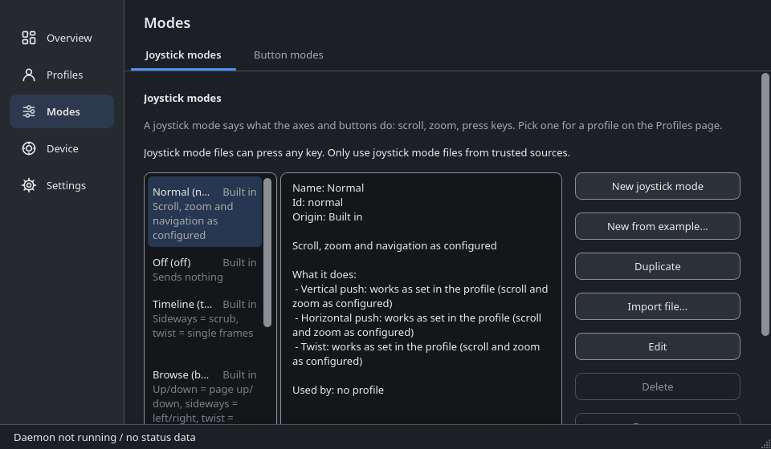

Use your SpaceMouse as a scroll wheel and zoom control in any program
A 3Dconnexion SpaceMouse is made for 3D and CAD programs. In a web browser, a PDF reader, a map or an office document it usually does nothing. dofscroll fixes that: push the cap to scroll, twist it to zoom, and tune everything per program. It is free software for Linux, Windows and macOS.
dofscroll is an independent project. It is not affiliated with or endorsed by 3Dconnexion. “SpaceMouse” and “3Dconnexion” are trademarks of their owners and are used only to name the supported hardware.
Why a 3D mouse as a scroll wheel?
A SpaceMouse has six axes, a soft cap and smooth, proportional input. That makes it a very good scroll wheel: slow push, slow scroll; firm push, fast scroll. People keep asking how to use a SpaceMouse for everyday programs, and the usual answer is that the device is for 3D applications only. dofscroll is the missing piece for everything else: it turns the six axes into the scrolling, zooming and keys that ordinary programs understand.
On Linux it reads the device through spacenavd, the open-source SpaceMouse daemon, and sends the events through X11 or uinput. On Windows and macOS it reads the device directly. You do not need the vendor’s 3D software.
What dofscroll does
- Smooth scrollingPush the cap forward or back and the window under the pointer scrolls, vertically or sideways, with a fixed update rate so it stays even.
- ZoomTwist the cap to zoom (Ctrl + scroll) in browsers, image viewers, maps and editors.
- Keys from the axesLet a direction press keys instead: arrow keys for a map, Page Up and Page Down for slides, volume or seek keys for media.
- Per-program and per-device profilesDifferent speed and behavior for Firefox, a PDF reader or a map program, and for each SpaceMouse model. Global, device and program settings inherit from each other.
- Built-in joystick modesNine ready-made modes that change what the cap does: normal, off, browse, slides, tabs, media, map, timeline and precision. Switch them from the tray or per program.
- Button modesReusable button behaviors: next or previous mode, cycle through favorites, reset zoom, switch navigation on and off.
- Settings window and tray iconA Qt interface with live axis display, light and dark theme, autosave and a running-program picker. German translation included.
- Write your own modesA mode is a small text file, no compiling. See How to write a mode.
dofscroll complements the vendor driver and does not replace it. A button that always sends the same key belongs in the driver; dofscroll handles what depends on its own state: modes, profiles and the axes.
Screenshots
The settings window of dofscroll, in the theme of your choice. The windows show sample data, not a connected device.






Download
All packages are on the GitHub Releases page. Download the package for your system together with SHA256SUMS.txt and check it with sha256sum -c --ignore-missing SHA256SUMS.txt.
| System | Install | Status |
|---|---|---|
| Fedora, RHEL family | sudo dnf install ./dofscroll-*.rpm (needs EPEL) | Verified by the maintainer on RHEL 9, X11, KDE Plasma. Other Linux distributions: not tested. |
| Debian, Ubuntu | sudo apt install ./dofscroll_*.deb | Package built and install-tested in a CI container; not run with a real device. |
| Windows 10 and 11 | Run dofscroll-*-setup.exe or unpack the portable ZIP. The installer is not code-signed, so SmartScreen asks first (More info, Run anyway). | Built by CI, never run with a real device. |
| macOS (Apple silicon) | Open the DMG and drag the app to Applications. It is not notarized: right-click, Open on first start. | Built by CI, never run with a real device. |
Wayland on Linux uses the uinput backend. It exists but is untested and needs an opt-in udev rule. Please report what works and what does not in the issue tracker.
Supported systems, hardware and software requirements: Requirements in the wiki. Full steps: installation guide.
Quick start (Linux)
- Install the package from the table above and finish the first-time setup in the installation guide.
- Start the SpaceMouse daemon:
sudo systemctl enable --now spacenavd, then plug in the device. - Start dofscroll:
systemctl --user enable --now dofscroll.service dofscroll-ui.service - Push the cap: the window under the pointer scrolls. Twist it: it zooms.
- Right-click the tray icon and open Settings to adjust sensitivity, dead zone and direction. Changes apply immediately.
Nothing happens? See Troubleshooting. More: Quick start in the wiki.
Frequently asked questions
Can I use a SpaceMouse to scroll in Firefox or Chrome?
That is what dofscroll is for. It sends ordinary scroll and zoom events to the window under the pointer, so it works with browsers, PDF readers, image viewers, maps and office programs. This was confirmed by the maintainer on Linux with X11. On other systems it is untested.
Can I use a 3D mouse as a scroll wheel on Linux?
Yes. Install spacenavd and dofscroll, push the cap to scroll and twist it to zoom. The tested setup is RHEL 9 with X11 and KDE Plasma.
Does it work without the 3Dconnexion driver?
On Linux dofscroll uses spacenavd, an open-source daemon, instead of the vendor software. On Windows and macOS it reads the device itself and needs no vendor SDK; that is not yet verified on real hardware.
Does it work on Wayland?
There is a uinput backend for Wayland. It is untested, needs an opt-in udev rule for /dev/uinput, and per-program profiles work only with kdotool on KDE.
Does it work on Windows and macOS?
The daemon, the settings interface and the installers are built by CI. Nobody has run them with a real SpaceMouse yet. Try them if you like and report back in the issues.
Which SpaceMouse models are supported?
Tested: SpaceMouse Pro and SpaceMouse Compact. Known but untested: Wireless, Pro Wireless, Enterprise and SpaceNavigator. On Linux any model that spacenavd supports delivers motion.
Will it disturb Blender or my CAD program?
Programs that read the SpaceMouse themselves would get the input twice. Turn dofscroll off for those programs with a program profile (ENABLED = 0).
Is it free?
Yes. dofscroll is free software under the GPL-3.0-or-later license, with no ads and no tracking. This website sets no cookies and loads nothing from other servers.
Is dofscroll made by 3Dconnexion?
No. It is an independent open-source project and is not affiliated with or endorsed by 3Dconnexion.
More information
- Built-in modes: what every joystick mode and button mode does
- How to write a mode
- Wiki and FAQ in the wiki
- Source code and issues on GitHub
- License: GPL-3.0-or-later